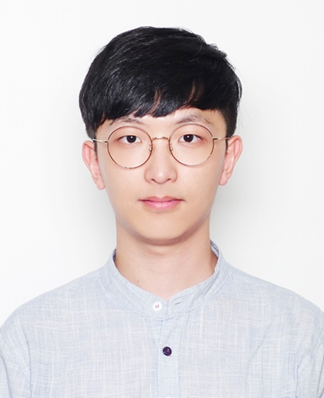

About me
Hi, I'm Woorak Choi. I grew up in South Korea, where I completed my Ph.D. in 2024 at Yonsei University with my supervisor Aeree Chung.
I'm interested in studying Giant Molecular Clouds (GMCs), the ISM, and magnetic fields in extreme environments utilizing radio telescopes like ALMA and the VLA.
Currently, my research extends to utilizing JWST NIRCam data to investigate star formation and PAHs in nearby galaxies such as M64, as well as studying GMCs in the Virgo cluster through the MAUVE-ALMA survey. I am also an active member of the KILOGAS project.
I also use simulation data (e.g., the TIGRESS simulation) to explore the kinematics of molecular gas and environmental effects like ram pressure stripping.
I'm a postdoctoral researcher at McMaster University, Canada, working with Prof. Christine Wilson (Since Sep 2024).